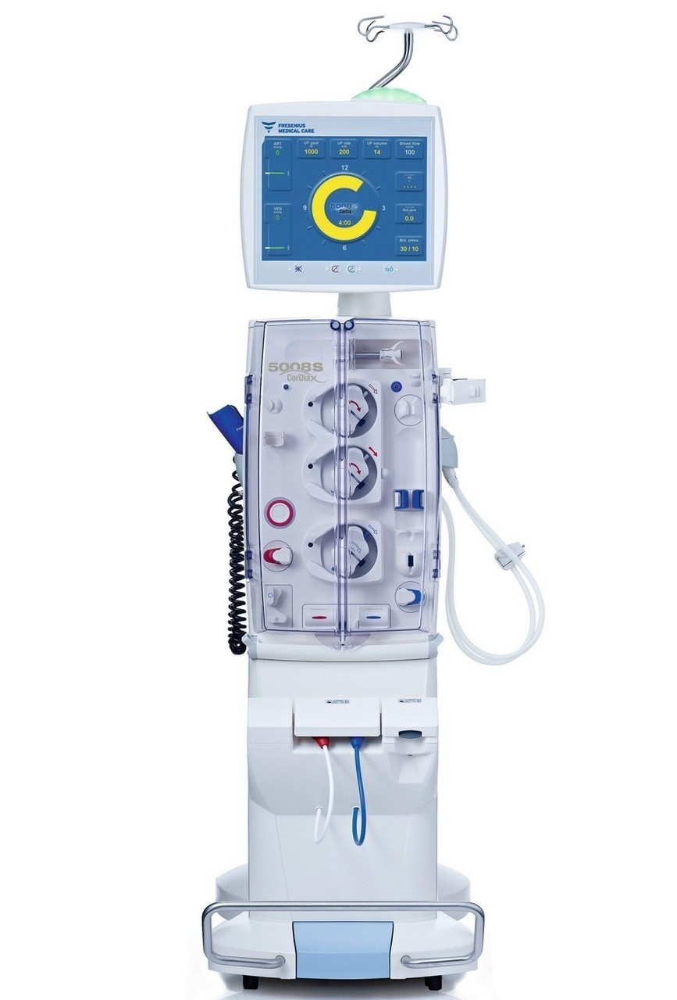
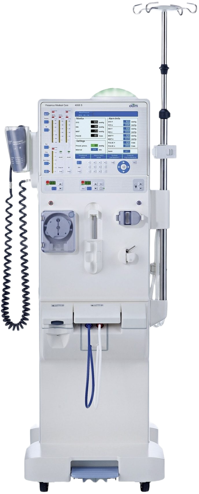
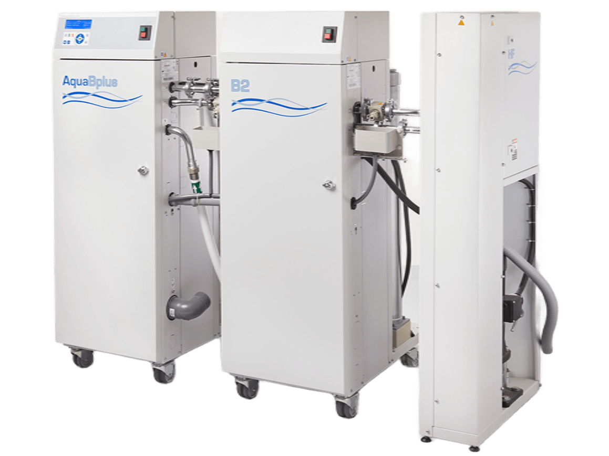
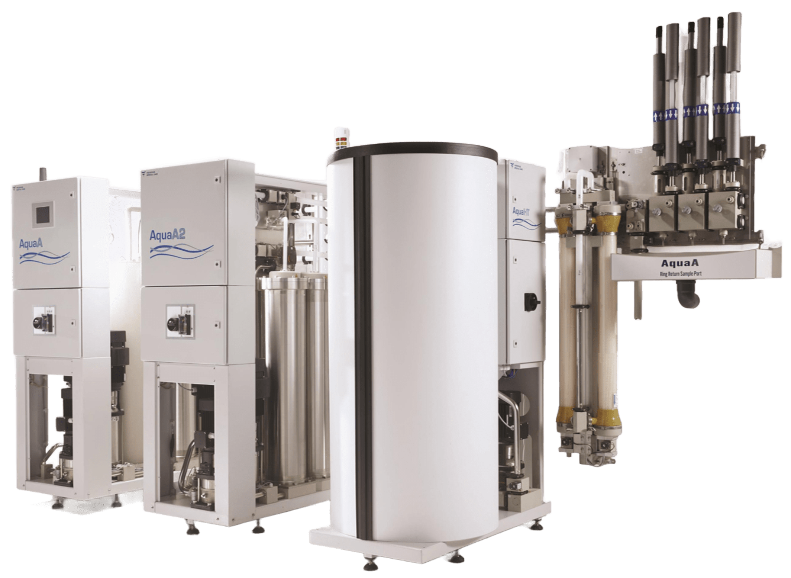

<section class="section">
    <div class="container">
        <div class="section-header section-header-left">
            <h1>Thiết bị Khoa Thận - Lọc máu</h1>
            <p>Danh sách các thiết bị dành cho Khoa Thận, Lọc máu của CTS.</p>
        </div>

        <div class="product-layout">
            <!-- Bên trái: sidebar các khoa -->
            <aside class="product-sidebar">
                <h3>Danh sách chuyên khoa</h3>
                <ul>
                    <li><a href="san-pham-khoa-than.html" class="active">Thiết bị Khoa Thận - Lọc máu</a></li>
                    <li><a href="san-pham.html">Thiết bị Khoa Xét nghiệm</a></li>
                    <li><a href="san-pham.html">Thiết bị Khoa Hồi sức – Cấp cứu</a></li>
                    <li><a href="san-pham.html">Thiết bị Khoa Phẫu thuật - Gây mê</a></li>
                    <li><a href="san-pham.html">Thiết bị Khoa Chuẩn đoán hình ảnh</a></li>
                    <li><a href="san-pham.html">Thiết bị Khoa Nội tim mạch</a></li>
                    <li><a href="san-pham.html">Thiết bị Khoa Răng hàm mặt</a></li>
                    <li><a href="san-pham.html">Thiết bị Khoa Dược</a></li>
                    <li><a href="san-pham.html">Thiết bị Khoa Kiểm soát nhiễm khuẩn</a></li>
                    <!-- ... các khoa khác sau này có thể bổ sung thêm ... -->
                </ul>
            </aside>

            <!-- Bên phải: danh sách máy – GRID 3 CỘT -->
            <div class="product-list">
                <!-- Mỗi sản phẩm là 1 <a> bọc 1 <article> -->
                
                <!-- Sản phẩm 1 -->
                <a href="chi-tiet-5008s.html" class="product-item-link">
                    <article class="card product-card">
                        <div class="card-thumb">
                            
                        </div>
                        <h3>Máy lọc máu Fresenius 5008S</h3>
                        <p>Hệ thống lọc máu hiện đại, hỗ trợ nhiều chế độ điều trị và theo dõi an toàn cho bệnh nhân.</p>
                        <span class="btn btn-outline product-card-btn">Xem chi tiết</span>
                    </article>
                </a>

                <!-- Sản phẩm 2 -->
                <a href="chi-tiet-4008s.html" class="product-item-link">
                    <article class="card product-card">
                        <div class="card-thumb">
                            
                        </div>
                        <h3>Máy lọc máu Fresenius 4008S</h3>
                        <p>Thiết bị lọc máu tin cậy, được sử dụng rộng rãi trong các khoa Thận – Lọc máu trên cả nước.</p>
                        <span class="btn btn-outline product-card-btn">Xem chi tiết</span>
                    </article>
                </a>

                <!-- Sản phẩm 3 -->
                <a href="chi-tiet-ro-system.html" class="product-item-link">
                    <article class="card product-card">
                        <div class="card-thumb">
                            
                        </div>
                        <h3>Hệ thống nước RO AquaBPlus</h3>
                        <p>Đảm bảo chất lượng nước tinh khiết, an toàn cho các hệ thống lọc máu trung tâm.</p>
                        <span class="btn btn-outline product-card-btn">Xem chi tiết</span>
                    </article>
                </a>

                <!-- Sản phẩm 4 -->
                <a href="chi-tiet-ro-system.html" class="product-item-link">
                    <article class="card product-card">
                        <div class="card-thumb">
                            
                        </div>
                        <h3>Hệ thống nước RO AquaAB</h3>
                        <p>Đảm bảo chất lượng nước tinh khiết, an toàn cho các hệ thống lọc máu trung tâm.</p>
                        <span class="btn btn-outline product-card-btn">Xem chi tiết</span>
                    </article>
                </a>

                <!-- Sản phẩm 5 -->
                <a href="chi-tiet-ro-system.html" class="product-item-link">
                    <article class="card product-card">
                        <div class="card-thumb">
                            
                        </div>
                        <h3>Máy đo thành phần cơ thể</h3>
                        <p>Phân tích thành phần cơ thể.</p>
                        <span class="btn btn-outline product-card-btn">Xem chi tiết</span>
                    </article>
                </a>

                <!-- Sản phẩm 6 -->
                <a href="chi-tiet-ro-system.html" class="product-item-link">
                    <article class="card product-card">
                        <div class="card-thumb">
                            
                        </div>
                        <h3>Hệ thống nước RO cho lọc máu</h3>
                        <p>Đảm bảo chất lượng nước tinh khiết, an toàn cho các hệ thống lọc máu trung tâm.</p>
                        <span class="btn btn-outline product-card-btn">Xem chi tiết</span>
                    </article>
                </a>

                <!-- Bạn thêm các sản phẩm khác bằng cách copy 1 block <a>...</a> ở trên và đổi ảnh + tên + mô tả + link -->
            </div>
        </div>
    </div>
</section>
